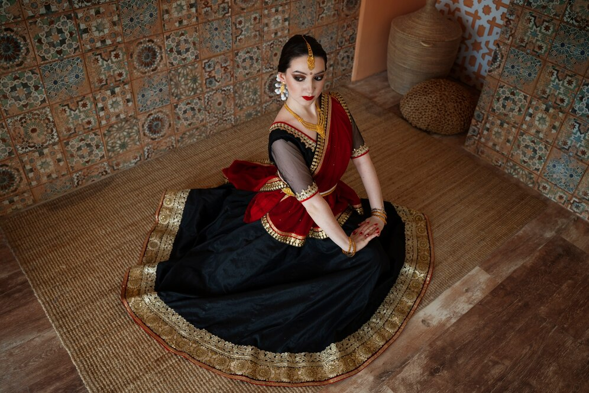
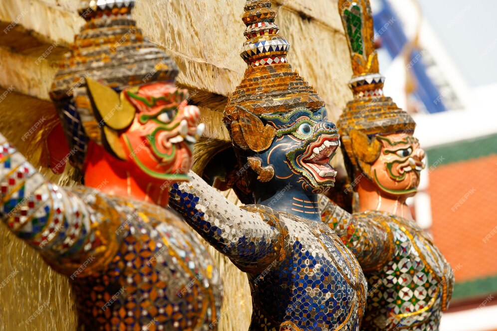

Tripura: Land of Royal Heritage

Ujjayanta Palace
The former royal palace of Tripura's Manikya dynasty, now serving as a museum showcasing the state's rich cultural heritage.

Hojagiri Dance
A traditional dance form performed by the Reang tribe, known for its graceful movements performed while balancing on earthen pitchers.

Tribal Heritage
Home to 19 tribes including the Tripuri, Reang, and Jamatia, each contributing to the state's rich cultural mosaic.